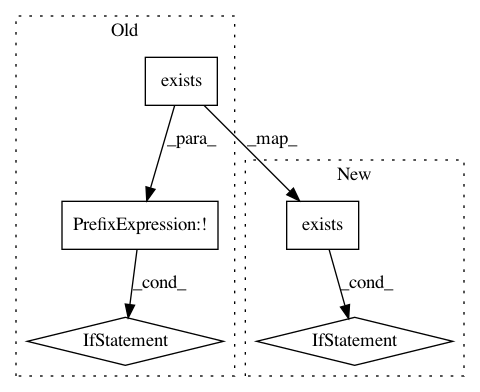

f02ab4559d2e4e17401b284f8c023e9693d06aa5,quickbrowse.py,BrowserWindow,set_up_listener,#BrowserWindow#,310
Before Change
// Each process has one BrowserWindow, and each BrowserWindow
// has one named pipe where it can accept commands.
self.pipe_name = NAMED_PIPE % 0000 // os.getpid()
if not os.path.exists(self.pipe_name):
os.mkfifo(self.pipe_name)
// For some reason, regular open() doesn"t always work on named pipes
// and sometimes hangs. Use os.open instead.
self.cmdpipe = os.open(self.pipe_name, os.O_RDONLY | os.O_NONBLOCK)
def check_pipe(self):
// Loop reading all data available.
After Change
try:
os.unlink(self.cmdsockname)
except OSError:
if os.path.exists(self.cmdsockname):
raise
// Create a UDS socket
self.cmdsock = socket.socket(socket.AF_UNIX, socket.SOCK_STREAM)
// Bind the socket to the port
self.cmdsock.bind(self.cmdsockname)
In pattern: SUPERPATTERN
Frequency: 3
Non-data size: 5
Instances
Project Name: akkana/scripts
Commit Name: f02ab4559d2e4e17401b284f8c023e9693d06aa5
Time: 2018-06-24
Author: akkana@shallowsky.com
File Name: quickbrowse.py
Class Name: BrowserWindow
Method Name: set_up_listener
Project Name: astroML/astroML
Commit Name: 4227f7c2810a6fc48165311e19a4a6aaac38475e
Time: 2019-04-16
Author: bsipocz@gmail.com
File Name: astroML/datasets/sdss_specgals.py
Class Name:
Method Name: fetch_sdss_specgals
Project Name: lcswillems/torch-rl
Commit Name: 3f196bcdd1e0310208e8978cf4f1fb590614568b
Time: 2018-04-15
Author: lcswillems@gmail.com
File Name: utils.py
Class Name:
Method Name: load_model